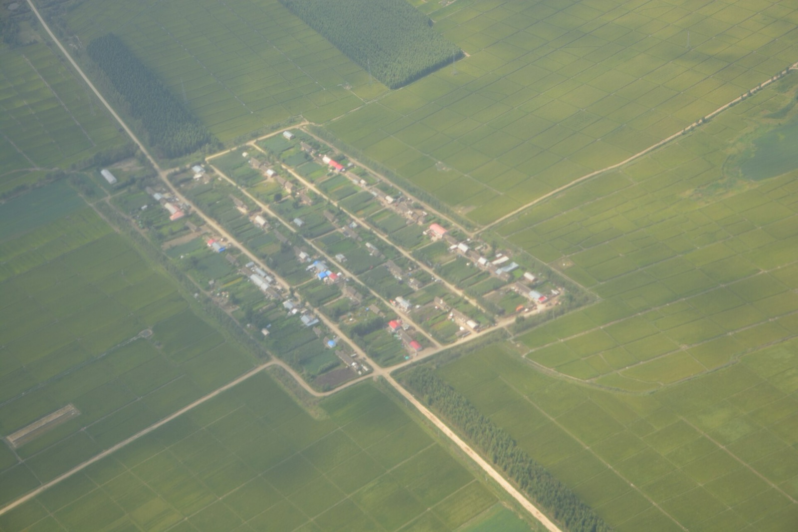
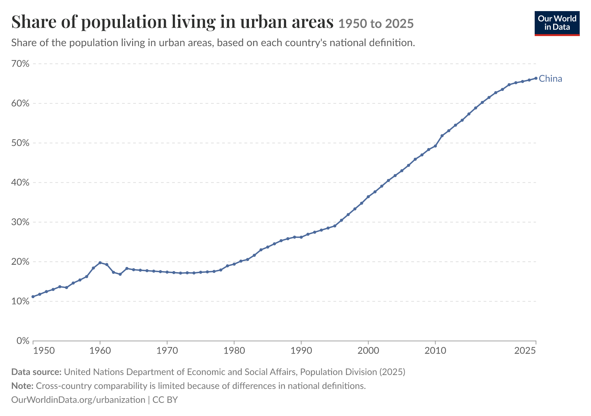
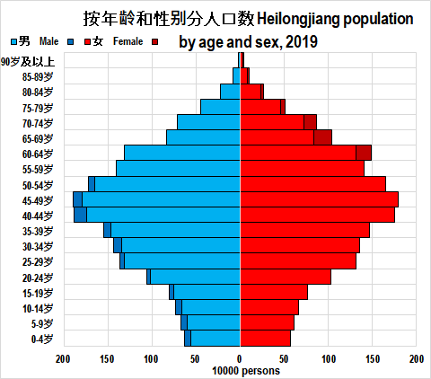
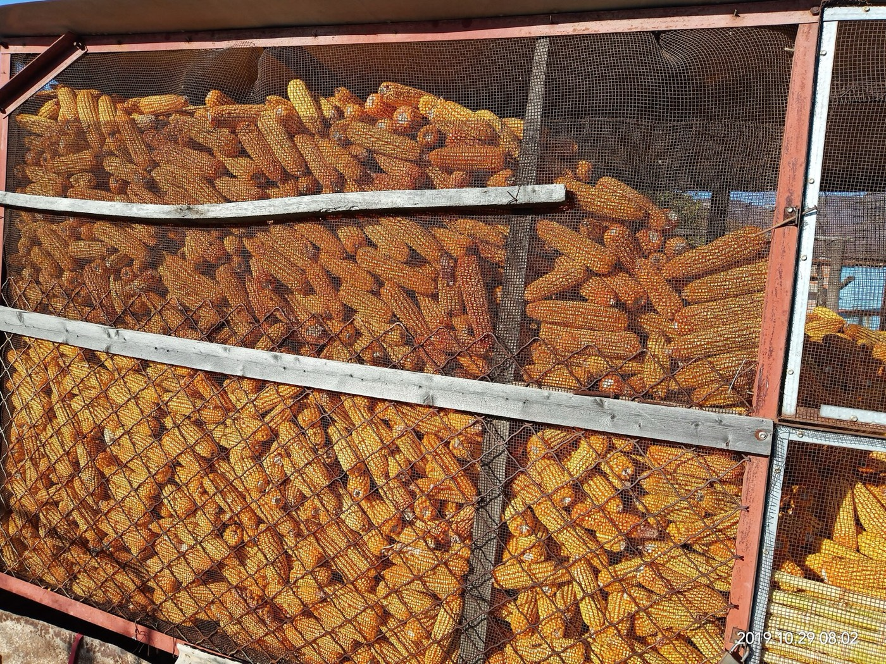

4. Impact of corn production on rural communities
What impacts does corn cultivation cause economically and socially within rural communities at a time when the province’s population is decreasing?
Rural incomes have been on a steady upwards trend. Disposable income rose 5.8 percent in 2025 to 22,188 yuan per person (HPBS 2026). Farms on the Northeast Plain average 12.8 hectares per person, compared to 2.7 on the North China Plain (Huo et al. 2022), so a profit of about US$436 per hectare aligns with the given data.


China’s aging population
Heilongjiang lost 330,000 people in 2024 (Caixin Global 2025) and 280,000 in 2025, and I calculated that its rural population fell by about 370,000 that year due to urbanisation (a rise from 68.05 to 68.98 percent according to HPBS (2025) and HPBS (2026)) and people chasing opportunities in larger cities. More than half of the province’s primary schools have closed in a decade (Caixin Global 2025), this plays into a feedback loop where the younger population leaving the region causes a decrease in the government facilities needed by that younger population which in turn causes more young people to leave.

On the northeast plain, 40.3 percent of farmers surveyed were over 54 and only 10.6 percent were under the age of 35 (Huo et al. 2022). In Lishu County in the neighbouring Jilin province (the region with second highest corn production as seen in the choropleth map), the average farmer surveyed was 58 (Yu et al. 2025).


Do machines replace people?
I suggested in the progress check-in that people leave first and machines follow, however a more nuanced story is supported by the major articles and data I’ve seen. The large gently sloping farms are very optimal for machine use, but Northeast Plain farmers ranked a lack of machinery training as the biggest barrier, industrial machines for corn farming cost from US$1,500 to US$15,000 which exposes machinery as an unwise business practice given that farmers earn under US$181.49 per hectare (Huo et al. 2022). Many hire machine services instead despite the higher cost long term.


Only 54 percent of Lishu farmers had adopted conservation tillage, and some of the others were ‘informed non-adopters’ who understood the cultivation method but had more faith in traditional practices. I think that the ageing, hesitant workforce is the pressure being handled least well.